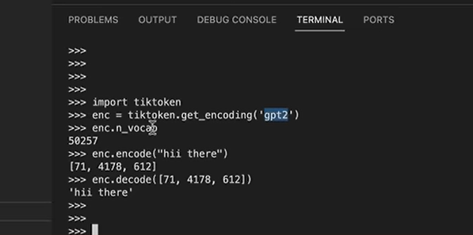

从头开始用代码构建 GPT
从生成文字进行对话这个角度看，GPT 是一种语言模型
ChatGPT 幕后组件，模拟单词序列的神经网络来自《Attention is All You Need》论文。这是 2017 年谷歌发布的人工智能领域的里程碑式的论文，产生并提出了 Transformer 架构
GPT 是生成式预训练 Transformer 的缩写，Transformer 是实际完成工作的神经网络
本视频重现的就是基于 Transformer 的语言模型。在本例中，它将是一个字符级语言模型
推荐使用《小莎士比亚》数据集


jupyter 中写的代码，此时没有使用历史，也没有使用 transformer，只是普通的二元模型
# -*- coding: utf-8 -*-
"""nanogpt.ipynb
Automatically generated by Colaboratory.
Original file is located at
https://colab.research.google.com/drive/1IAgZO2udwzOpZpJvyCzFZ0As9NZIDhS1
"""
!wget https://raw.githubusercontent.com/karpathy/char-rnn/master/data/tinyshakespeare/input.txt
# read it in to inspect it
with open('input.txt','r',encoding='utf-8') as f:
text = f.read()
print('length of dataset in characters: ',len(text))
# let's look at the first 1000 characters
print(text[:1000])
# here are all the unique characters that occur in this text
chars = sorted(list(set(text)))
vocab_size = len(chars)
print(''.join(chars))
print(vocab_size)
# 编解码 -> 为了让模型更好地使用数据
# 有很多种方式, 这里的方式比较简单, 只是将字符和数字对应
# 谷歌使用句子片段的编解码 Sentence Piece 将文本编码为整数, 但是以不同的模式并使用不同的词汇
# 它一种分词排序的分词器, 既没有对整个单词编码, 也不是对单个字符编码, 而是一个子词单元级别的. 这也是实践中通常采用的做法(子词编码)
# OpenAI也有一个叫tiktoken的仓库, 使用 字节对编码标记器
# create a mapping from characters to integers
stoi = { ch:i for i,ch in enumerate(chars) }
itos = { i:ch for i,ch in enumerate(chars) }
encode = lambda s: [stoi[c] for c in s] # encoder: take a string, output a list of integers
decode = lambda l: ''.join([itos[i] for i in l]) # encoder: take a list of integers, output a string
print(encode("hii there"))
print(decode(encode("hii there")))
# let's now encode the entire text dataset and store it into a torch.Tensor
import torch # we use PyTorch: https://pytorch.org
data = torch.tensor(encode(text), dtype=torch.long)
print(data.shape, data.dtype)
print(data[:1000]) # the 1000 characters we looked at earier will to the GPT look like this
# Let's now split up the data into train and validation sets
n = int(0.9*len(data)) # first 90% will be train, rest val
train_data = data[:n] # 划分出训练集
val_data = data[n:] # 测试集
# 我们训练时不是一次性将所有文本（数据）传给Transformer进行训练，这是很昂贵的，我们会分为小块一点一点训练
block_size = 8
train_data[:block_size+1]
# 块大小里的字符有前后字符，这些上下文字符可以用于预测
# Transformer在预测下一个字符时，不会收到超过块大小的输入
x = train_data[:block_size]
y = train_data[1:block_size+1]
for t in range(block_size):
context = x[:t+1]
target = y[t]
print(f'when inputs is {context} the tartget: {target}')
# batch是GPU并行处理的任务数(批数)
torch.manual_seed(1337)
batch_size = 4 # how many independent sequences will be process in parallel?
block_size = 8 # what is the maximum context length for predictions?
def get_batch(split):
# generate a small batch of data of inputs x and target y
data = train_data if split == 'train' else val_data
# ix是(len(data)-block_size)之间随机生成的batch_size个数字
# 数据集中的随机偏移
ix = torch.randint(len(data) - block_size, (batch_size,))
# 取出8个字符.循环4次,每次+随机i,然后堆叠成4*8(4行是独立的)
x = torch.stack([data[i:i+block_size] for i in ix])
y = torch.stack([data[i+1:i+block_size+1] for i in ix])
return x, y
xb, yb = get_batch('train')
print('inputs:')
print(xb.shape)
print(xb)
print('targets:')
print(yb.shape)
print(yb)
print('-----')
for b in range(batch_size): # batch dimension
for t in range(block_size): # time dimension
context = xb[b,:t+1]
target = yb[b,t]
# x中32个独立示例,对应y中target
# transformer将同时处理所有示例,然后查找正确的target
print(f'when input is {context.tolist()} the target: {target}')
print(xb) # our input to the transformer
import torch
import torch.nn as nn
from torch.nn import functional as F
torch.manual_seed(1337)
''' gpt:
这是一个名为“BigramLanguageModel”的类，继承自 PyTorch“nn.Module”类。它需要词汇量作为输入。该模型通过给定前一个标记来预测下一个标记来生成文本。
在“init”方法中，查找表用于获取输入序列中每个标记的下一个标记的 logits（非标准化概率）。重点仅在于输入序列的最后一个时间步。
然后将 logits 通过 softmax 函数来获取每个可能的下一个标记的概率。 “dim=-1”参数指定应沿张量的最后一个维度应用 softmax。
“torch.multinomial”函数用于从概率分布中采样以获得下一个标记的索引。
“num_samples=1”参数指定应为每个输入序列仅抽取一个样本。然后将采样的索引附加到预测标记的运行序列中。
该方法的最终输出是预测标记的完整序列，包括原始输入序列和新预测的标记。
'''
class BigramLanguageModel(nn.Module):
def __init__(self, vocab_size):
super().__init__()
# each token directly reads off the logits for the next token from a lookup table
# 其为一个简单的存储固定大小的词典的嵌入向量的查找表，意思就是说，
# 给一个编号，嵌入层就能返回这个编号对应的嵌入向量，嵌入向量反映了各个编号代表的符号之间的语义关系。
# 输入为一个编号列表，输出为对应的符号嵌入向量列表。
# 词向量表
self.token_embedding_table = nn.Embedding(vocab_size, vocab_size)
def forward(self, idx, targets=None):
# idx and targets are both (B,T) tensor of integers
logits = self.token_embedding_table(idx) # (B,T,C)
if targets is None:
loss = None
else:
B,T,C = logits.shape
# 变成2维的
logits = logits.view(B*T, C)
# 变成1维
targets = targets.view(B*T)
# 负对数似然衡量损失
loss = F.cross_entropy(logits, targets)
return logits, loss
''' gpt:
这是一个名为“generate”的方法，它接受两个参数：“idx”和“max_new_tokens”。
“idx”是表示当前上下文的二维数组，其中第一维表示字节，第二维表示目标。
“max_new_tokens”是一个整数，表示可以生成的最大令牌数。
该方法使用循环一次生成一个新令牌。在循环内，进行预测（大概使用语言模型或类似技术）以确定要添加到上下文中的下一个标记。此代码片段中未提供如何进行这些预测的详细信息。
最后，更新后的上下文作为“idx”返回。
'''
def generate(self, idx, max_new_tokens):
# idx是当前上下文(byte,target)
# idx is (B,T) array of indices in the current context
for _ in range(max_new_tokens):
# get the predictions
logits, loss = self(idx)
# focus only on the last time step
logits = logits[:,-1,:] # becomes (B,C)
# apply softmax to get probabilities
# softmax 输出预测目标的概率(0~1)
probs = F.softmax(logits,dim=-1) # (B,C)
# sample from the distribution
idx_next = torch.multinomial(probs,num_samples=1) # (B,1)
# append sampled index to the running sequence
idx = torch.cat((idx,idx_next),dim=1) # (B,T+1)
return idx
m = BigramLanguageModel(vocab_size)
logits, loss = m(xb,yb)
print(logits.shape)
print(loss) # -ln(1/65)
print(decode(m.generate(idx = torch.zeros((1,1),dtype=torch.long),max_new_tokens=100)[0].tolist()))
# 优化器
optimizer = torch.optim.AdamW(m.parameters(),lr=1e-3)
batch_size=32
for steps in range(10000):
# sample a batch of data
xb,yb = get_batch('train')
# evaluate the loss
logits,loss = m(xb,yb)
# 梯度清零
optimizer.zero_grad(set_to_none=True)
# 获取所有参数的梯度
loss.backward()
# 然后更新参数
optimizer.step()
print(loss.item())
print(decode(m.generate(idx = torch.zeros((1,1),dtype=torch.long),max_new_tokens=500)[0].tolist()))
jupyter
# The mathematical trick in self-attention
# consider the following toy example:
torch.manual_seed(1337)
B,T,C=4,8,2 # batch,time,channels
x = torch.randn(B,T,C)
x.shape
# 每个token不能和未来token通信,它只能从过去的token里获取信息,预测未来token
# 信息仅从先前的上下文流到当前的时间步长,无法从未来获取任何信息,因为我们将尝试预测未来
# 令牌通信最简单的方式，比如得到第五个token，则将前面几个(channels)和第五个元素一起求平均，形成一种类似特征向量的东西
# 但是这种方式（求平均或求和）会损失很多信息，是很弱的(上下文)交互形式
# 加权聚合求平均
# version 1
# we want x[b,t] = mean_{i<=t} x[b,i]
xbow = torch.zeros((B,T,C))
for b in range(B):
for t in range(T):
# 过去的所有元素
xprev = x[b,:t+1] # (t,C)
# t维度求平均，结果shape为(C,)维度
xbow[b,t] = torch.mean(xprev,0)
# version 2
wei = torch.tril(torch.ones(T,T))
wei = wei / wei.sum(1,keepdim=True)
xbow2 = wei @ x # (B,T,T) @ (B,T,C) -> (B,T,C)
# 是否相等
torch.allclose(xbow,xbow2)
# version 3: use Softmax
tril = torch.tril(torch.ones(T,T))
wei = torch.zeros((T,T))
# 所有tril==0的元素都变为无穷大(-inf)
wei = wei.masked_fill(tril==0,float('-inf'))
wei = F.softmax(wei,dim=-1)
xbow3 = wei @ x
torch.allclose(xbow,xbow3)
# 不同token间有不同的'亲和力'
torch.tril(torch.ones(3,3))
# 利用数学，得到前n行的平均
torch.manual_seed(42)
a = torch.tril((torch.ones(3,3)))
a = a / torch.sum(a,1,keepdim=True)
b = torch.randint(0,10,(3,2)).float()
# 矩阵乘法
c = a @ b
print('a=')
print(a)
print('--')
print('b=')
print(b)
print('--')
print('c=')
print(c)